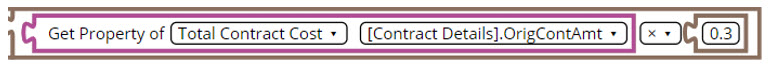

The Math operations enable you to add numbers into the
logic or to execute arithmetic operations in the logic.
Number Block
The Number block enables you to use a number field in the logic. For
example, if you want to check if the value of a field is greater than a value, then you can use the Number block.
Arithmetic Operations Block
The Arithmetic Operations block enables you to execute arithmetic operations. This block has an input operand and an output block. For
example, if you want to check whether a field value is greater than 30% of another field value, then you can use the Arithmetic Operations block.Figure 1.
